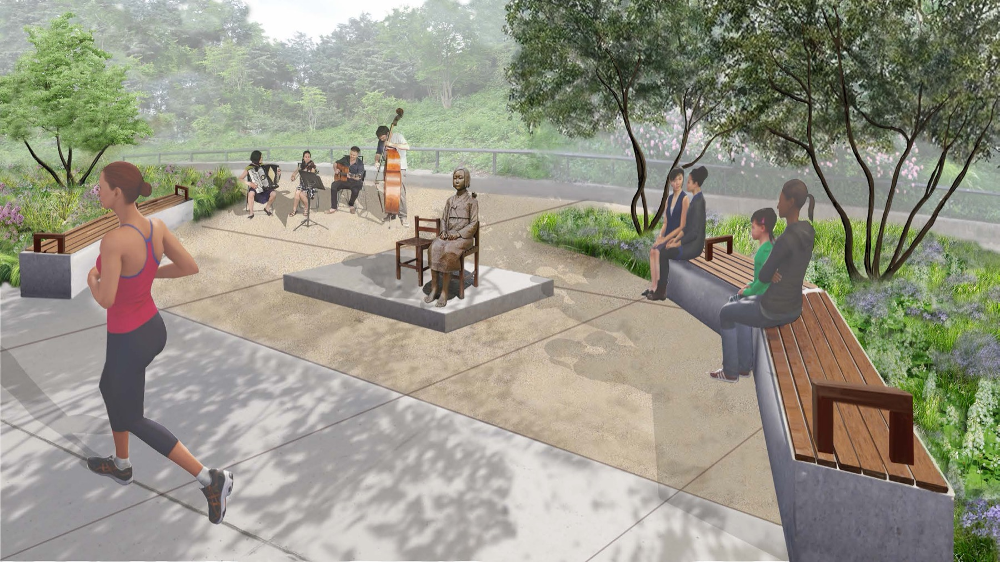
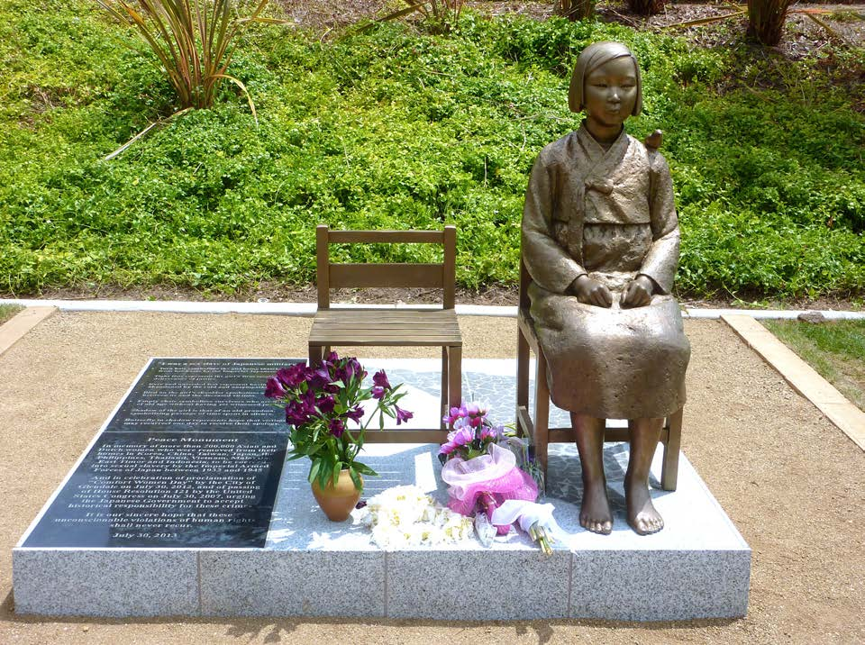
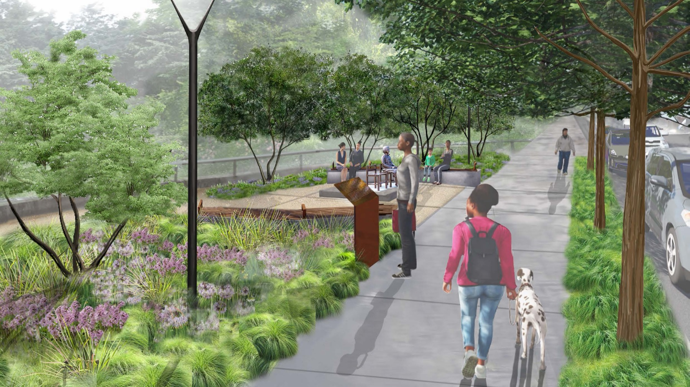
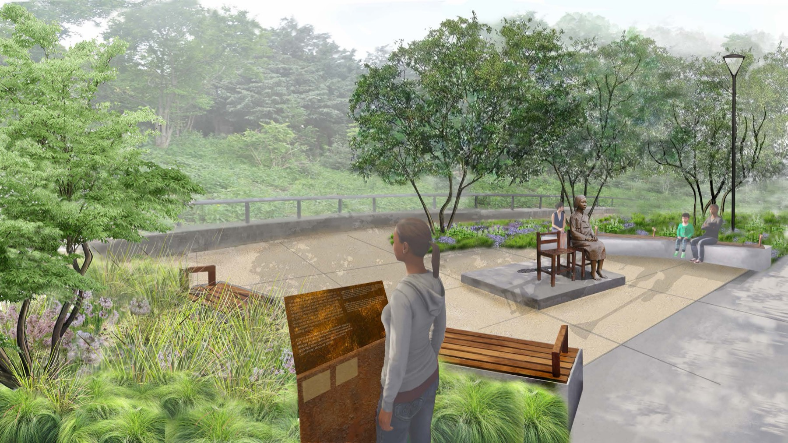
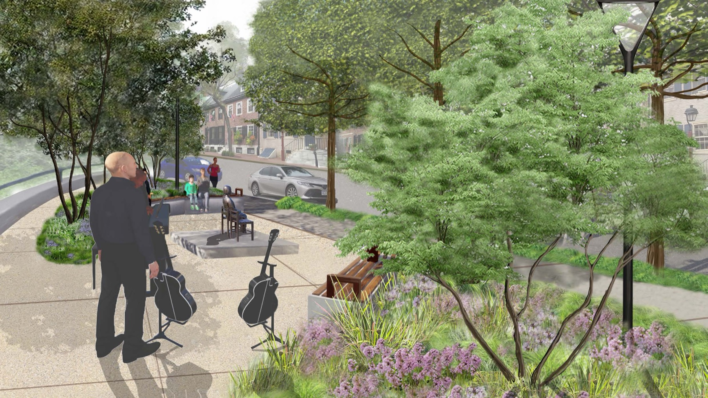
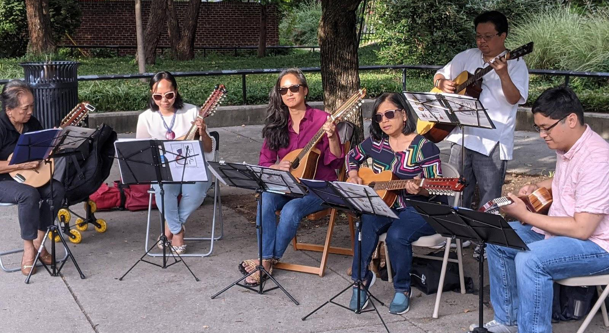
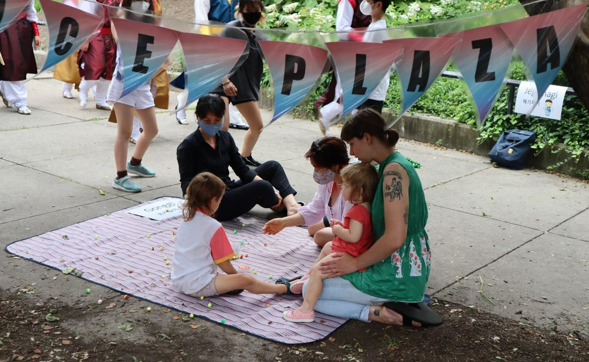
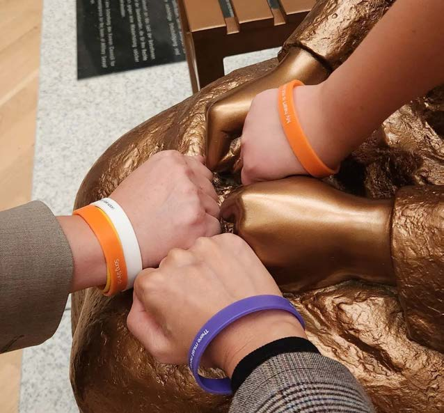

Remember
Give voice to the victims of sexual violence and support peacemaking across communities.
The Philadelphia Peace Plaza is home to the Statue of Peace and a public garden in Queen Village.

Rendering: TEND landscape architects01 Our purpose
Honoring the victims of sexual slavery during World War II, and welcoming everyone who seeks peace.
Give voice to the victims of sexual violence and support peacemaking across communities.
A contemplative space for the forgotten faces of armed conflict, inviting visitors to help end inequality, violence, and enslavement.
Communities seeing each other beyond national and cultural identities, and building lasting peace through open dialogue.
02 The memorial
Created in 2011 by Seokyung Kim and Eunsung Kim. The sculpture is now in 17 places around the world, including 6 in the United States.

A bronze girl sits with her fists resting on her knees. A small bird sits on her shoulder, and the chair beside her is empty. Visitors are invited to sit with her.
Inscription
This statue commemorates hundreds of thousands of girls and women from Asia, Oceania, and Europe who fell victim to the systemic sexual slavery by the Japanese Imperial Army from 1931 to 1945. Starting in 1991, the survivors broke the cycle of shame and silence by testifying and urged the world to protect the future generations of women by facing the past and to build lasting peace.
Philadelphia Peace Plaza Committee03 History
During World War II, girls and women across Asia, Oceania, and Europe were coerced into sexual slavery by the Imperial Japanese Army. For decades their stories went untold.
Survivor Kim Haksoon gives her public testimony. Survivors around the world begin to come forward.
The Statue of Peace is created and installed in Seoul, South Korea.
The Committee enters Philadelphia's public art donation process, selects 805 S. Front Street, and begins outreach in Queen Village.
TEND landscape architects joins to design the plaza.
The Philadelphia Art Commission gives the project unanimous conceptual approval. The Committee becomes an independent organization.
The Committee presents at a City-hosted Town Hall and returns to the Art Commission for a second review.
04 The plaza
Designed by TEND landscape architects with neighbors in Queen Village, who already call the site “the Sanctuary.”



Renderings: TEND landscape architects
Witch hazel, sweetbay magnolia, black gum, and native grasses bring color and shade in every season.
Concrete and wood benches curve around the statue, with low lighting for evening visits.
More green space and shade than the site has today, with room for small concerts and events.
Materials
06 Programs

A small, mostly unamplified monthly concert series with music from France, Korea, Latin America, and the Philippines.

Korean dance, music, and games for all ages during Immigrant Heritage Month.

A poetry video by Philadelphia poets Michelle Meyer and Yolanda Wisher, marking 30 years since Kim Haksoon's testimony.
07 Get involved
Gifts fund free programs and long-term care of the statue and garden. The Queen Village Neighbors Association is our fiscal sponsor.
Community and cultural groups can host performances, conversations, or resource tables at the Plaza.